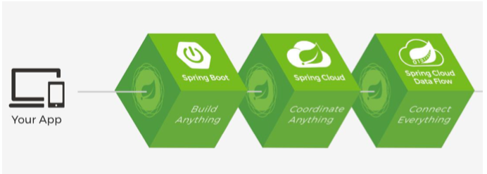
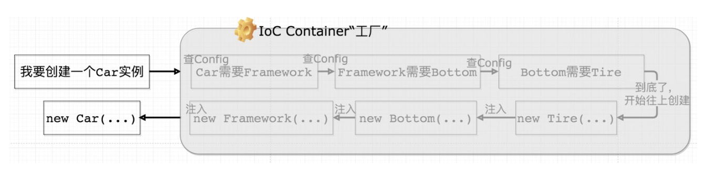
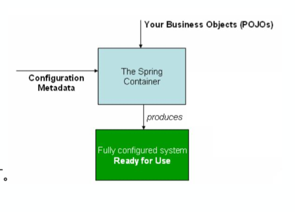

前言
本篇文章记录了学习Spring基础的笔记，以及IoC原理、个人理解和Spring Ioc容器的使用。
1.Spring全家桶
- Spring是一套框架，被称为Spring全家桶：
Spring Framework( 核心)
Spring Boot(构建项目，在此基础上进行Spring开发)
Spring Cloud(微服务，可以把项目拆分为一些子项目)
Spring Cloud Date Flow（把多个客户端数据集成）
 - Spring.io里面有各种Spring的介绍
2.Spring Framework简介
Spring Core
- IoC(面向对象)、AOP(面相切面)是管理对象的思想，有了这两种思想可以管理一切Bean
- 由Spring管理的对象叫做Bean
beans可以理解为一个类,这个类满足
1、所有属性为private
2、提供默认构造方法
3、提供getter和setter
4、实现serializable接口Java的”对象序列化”能让你将一个实现了Serializable接口的对象转换成一组byte，这样日后要用这个对象时候，你就能把这些byte数据恢复出来，并据此重新构建那个对象了。这一点甚至在跨网络的环境下也是如此，这就意味着序列化机制能自动补偿操作系统方面的差异。也就是说，你可以在Windows机器上创键一个对象，序列化之后，再通过网络传到Unix机器上，然后在那里进行重建。你不用担心在不同的平台上数据是怎样表示的，byte顺序怎样，或者别的什么细节。
Spring Date Access
Transactions（管理事务）、Spring MyBatis（管理MyBatis）Web Servlet
Spring MVCIntegration(整合)
Email、Scheduling、AMOP(消息队列)、Security
3.IoC
Inversion of Control
- 控制反转，是一种面向对象的设计思想
可以看这篇回答先了解个大慨
IoC知乎回答 - IoC(Inversion of Control)：控制反转。
控制：当前对象对内部成员的控制权。
反转：这种控制权不由当前对象管理了，由其他(类,第三方容器)来管理。
控制反转是为了降低类与类之间的耦合度。 - DI(Dependency Injection)：依赖注入。
IOC不够开门见山，于是Martin Fowler提出了DI(dependency injection)来替代 - 控制反转是目的，依赖注入是实现控制反转的手段。
依赖注入是通过IoC Container实现的个人对IoC的理解
- 最开始，A类和B类之间要协作的话，A类里面new一个B类对象，这样A类就依赖B类，如果有一系列的依赖，底层类要改动，上层的类都要改动
- 然后有了依赖倒置原则实现控制反转
《敏捷软件开发》十一章
依赖倒置原则：- 高层模块不应该依赖底层模块，二者都应该依赖抽象
2.抽象不应该依赖细节，细节应该依赖抽象
然后我们就不在 A类里newB类对象，只把B类对象引用传过来，各层把new对象的权利交了出去，交给外部。
这样就不用管底层类的改动就不会影响上层类
- 高层模块不应该依赖底层模块，二者都应该依赖抽象
- 最后有了依赖注入来实现控制反转

虽然依赖倒置原则可以实现控制反转，但是有很多项目有很多层的依赖，这样创建一个高层类，需要从底层一层层new，而依赖注入就把这些操作封装在一个容器里，这个容器就像一个对象生产工厂，我们需要一个对象，直接从这个工厂里领。
4.Spring IoC实现和IoC容器的使用
Spring IoC是怎么实现的

给IoC Container传入Bean和配置文件，然后就可以取我们需要的对象
- Application类，运行的时候不止启动了Tomcat，还自动帮我们创建了IoC容器
这个类有一个@SpringBootApplication注解，这个注解是由其他注解组成的
@SpringBootConfiguration（表示是配置文件）
@EnableAutoConfiguration（表示自动配置）
@Componentscan(会扫描这个配置类所在的包和子包下的Bean） - 在Bean上加上@Component、@Controller（处理请求）、@Service（处理业务）、@Repository（处理数据库）)
就都会被扫描到(后三个是通过@Component实现的) - 如果测试包下的配置类里要用main下的配置类作为自己的配置类
@ContextConfiguration(classes = CommunityApplication.class)怎么使用Ioc容器
- 哪个类想使用IoC容器，就实现接口：
implements ApplicationContextAware
并实现方法setApplicationContext（ApplicationContext applicationContext）
传入的接口ApplicationContext就是一个Spring容器，它是Spring容器顶层接口BeanFactory的子接口 接受Spring容器：
1
2
3
4
5
6private ApplicationContext applicationContext;
@Override
public void setApplicationContext(ApplicationContext applicationContext) throws BeansException {
this.applicationContext = applicationContext;
}使用容器创建bean：
1
2
3
4
5
6@Test
public void contextLoads() {
//从容器中获取需要的bean
AlphaDao alphaDao = applicationContext.getBean(AlphaDao.class);
System.*out*.println(alphaDao.select());
}如果一个接口有多种实现类，IoC容器就不知道调用哪一个，可以在想优先调用的实现类上加上注解
@Primary
这也是一种面向接口的思想，我们调用接口，当实现类有变化的时候，调用的代码不用改变，在需要调用的实现类上加上@Primary注解即可可能大部分地方需要接口的A实现类(Primary)，但有些地方需要接口的B实现类，我们也可以通过注解指定
通过在B实现类的注解后面加上一个简单的名字：@Repository(“name”)
然后从容器中需要特定取B实现类的时候就用:AlphaDao alphaDao = applicationContext.getBean(“name”,AlphaDao.class);通过IoC容器初始化和销毁Bean
在bean的初始化方法上加上@PostConstrucr，就会在构造方法后调用这个初始化方法1
2
3
4@PostConstruct
public void init(){
System.*out*.println(“初始化AlphaService”);
}
在bean的销毁方法前加上@PreDestroy，就会在销毁前调用这个方法1
2
3
4@PreDestroy
public void destroy(){
System.*out*.println(“销毁AlphaService”);
}
被IoC容器初始化的Bean默认是单例的，只实例化一次，如果想每次获取bean都实例化不，可以在bean上加上注解:@Scope(“prototype”)
- 以上都是针对自己写的bean，如果是第三方的bean，没法修改代码，可以用配置类，普通的配置类要加上注解@Configuration
要定义第三方的Bean，要在配置类里的方法上加上注解@Bean，方法名就是Bean名Spring的@Bean注解用于告诉方法，产生一个Bean对象，然后这个Bean对象交给Spring管理。产生这个Bean对象的方法Spring只会调用一次，随后这个Spring将会将这个Bean对象放在自己的IOC容器中。
1
2
3
4
5
6
7
8@Configuration
public class AlphaConfig {
@Bean
public SimpleDateFormat simpleDateFormat(){
return new SimpleDateFormat(“yyyy-mm-dd”);
}
}
测试运行1
2
3
4
5
6@Test
public void testBeanConfig(){
SimpleDateFormat simpleDateFormat =
applicationContext.getBean(SimpleDateFormat.class);
System.*out*.println(simpleDateFormat.format(new Date()));
}
- 上面是手动创建Bean,下面用依赖注入
1
2@Autowired
private AlphaDao alphaDao;
然后就可以调用对象1
2
3
4@Test
public void testDI() {
System.out.println(alphaDao);
}
直接在配置文件定义，就会自动注入
- 需要自定义注入的接口的某个实现类，加一个注解即可:
1
2
3@Autowired
@Qualifier(“alphaHibernate”)
private AlphaDao alphaDao;